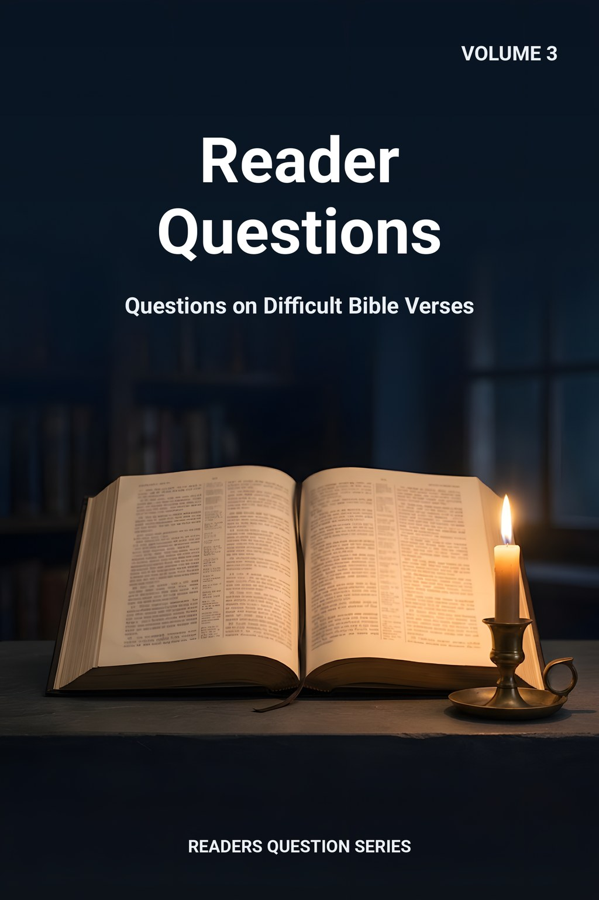
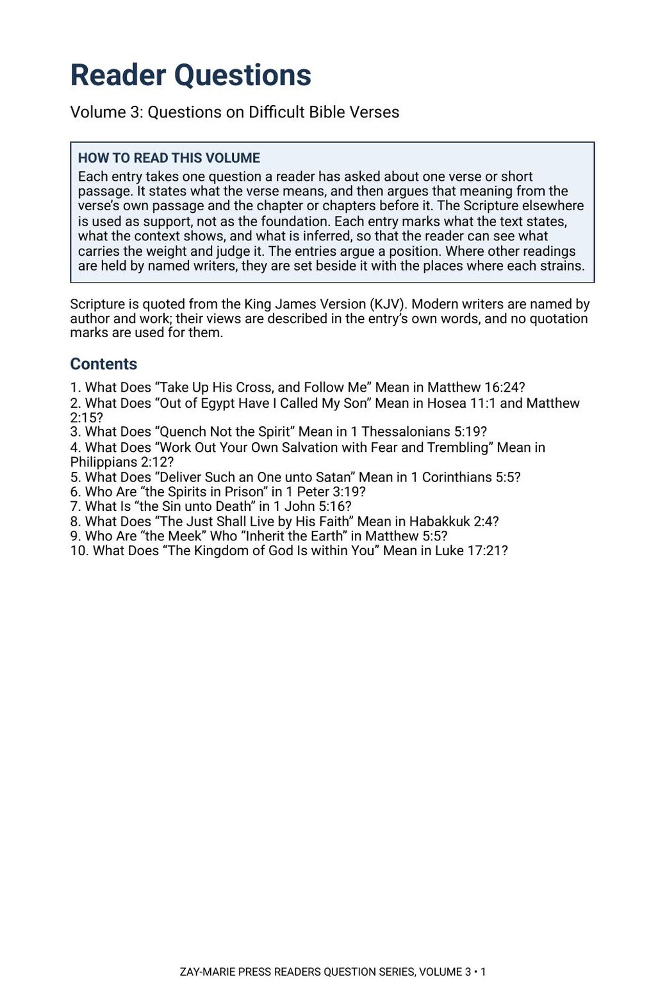
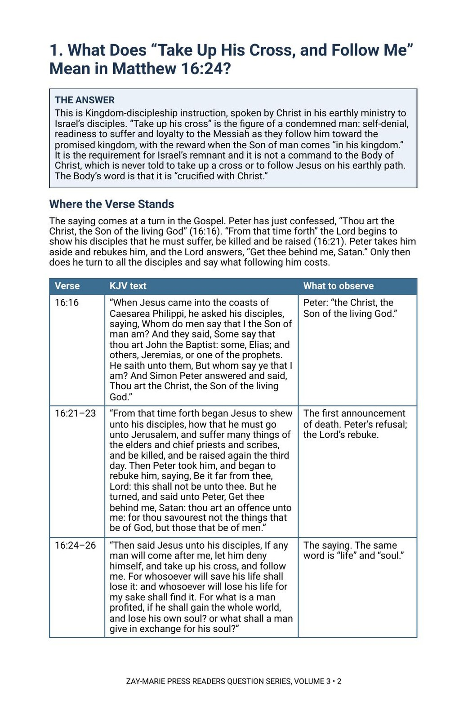

Reader Questions
Questions on Difficult Bible Verses
What does this verse mean, and what in its own chapter says so?
A reader asks about one verse: what it means to take up the cross, who the spirits in prison are, what the sin unto death is. Each entry gives the answer first, then walks back through the passage and the chapter before it to show why the verse means what it does, and marks every point as stated, shown by the context or inferred.
The entries argue a position and say so. Where named modern writers read a verse differently, their views are set beside the answer, with the place where each reading strains.
One Verse, Argued from Its Own Setting
Each entry answers one question about one verse or short passage. It does not begin with a theory and look for verses to fit; it begins with the verse, reads it in its own passage and in the chapter or chapters before it, and lets the rest of Scripture support what the context shows.
It is the third volume of the Readers Question Series. It is shorter than a Commentary Volume and takes one question at a time, and it is a different kind of book from a Digital Study, which reports what a passage says and leaves the question open. Scripture is quoted from the King James Version throughout. The free answers on the Questions page give each reply in a few sentences; this volume gives the whole entry.
Related Reading
Digital Studies
Study 45 — Sanctification Under Grace Reports what Scripture says of the believer’s sanctifying; the entries argue what quenching the Spirit and working out salvation mean.
Study 41 — Kingdom of God or Kingdom of Heaven Reports the two phrases as written; the entries argue what Luke 17:21 and Matthew 5:5 say of the kingdom.
Study 79 — The Realms of the Dead Reports the words for the unseen world; the entry argues who the spirits in prison are.
Commentary Series
Gospel, Volume 1 — The Sermon on the Mount Argues the Sermon, where Matthew 5:5 is spoken, as given to Israel.
Gospel, Volume 2 — The Lord’s Ministry to Israel Argues the Lord’s ministry before the Cross, the setting of Matthew 16:24 and Luke 17:21.
Prophecy & Mystery, Volume 3 — The Kingdom Program Argues the kingdom promised to Israel, earthly and still to come.
Doctrinal Packets
Doctrinal Packet — Matthew Interprets the book through its key passages in five pages.
Doctrinal Packet — 1 Corinthians Interprets the book through its key passages in five pages.
Doctrinal Packet — 1 Peter Interprets the book through its key passages in five pages.
Ten Questions, Ten Passages
Discipleship and Sonship
Read Matthew 16 from Peter’s confession to the saying about the cross, then set Hosea 11:1 beside Matthew 2:15 and ask who each “son” is.
Spirit and Salvation
Follow 1 Thessalonians 5 and Philippians 2 to see to whom the commands are given and what “quench” and “work out” are said to do.
Discipline in the Assembly
Read 1 Corinthians 5 from the report of the sin to the man’s being delivered, and 1 John 5 for the sin unto death and who may pray.
The Spirits in Prison
Hold 1 Peter 3, 2 Peter 2 and Jude together on who the spirits are and when and to whom Christ preached.
Faith in Habakkuk
Trace Habakkuk 2:4 through Romans 1, Galatians 3 and Hebrews 10 and ask what each writer does with the same line.
The Meek and the Kingdom
Read Matthew 5 and Luke 17 in their own settings for who inherits the earth and what “within you” says about where the King stood.
Read the Word in Its Context
Matthew 16:24
“Then said Jesus unto his disciples, If any man will come after me, let him deny himself, and take up his cross, and follow me.”
Hosea 11:1
“When Israel was a child, then I loved him, and called my son out of Egypt.”
1 Corinthians 5:5
“To deliver such an one unto Satan for the destruction of the flesh, that the spirit may be saved in the day of the Lord Jesus.”
1 Peter 3:19
“By which also he went and preached unto the spirits in prison;”
1 John 5:16
“If any man see his brother sin a sin which is not unto death, he shall ask, and he shall give him life for them that sin not unto death. There is a sin unto death: I do not say that he shall pray for it.”
Habakkuk 2:4
“Behold, his soul which is lifted up is not upright in him: but the just shall live by his faith.”
Matthew 5:5
“Blessed are the meek: for they shall inherit the earth.”
Luke 17:21
“Neither shall they say, Lo here! or, lo there! for, behold, the kingdom of God is within you.”
How Each Entry Works
Each entry marks what the text states, what the context shows, and what is inferred, so that the reader can see what carries the weight and judge it.
The entries argue a position, and the other readings are set beside it with the places where each strains.
Preview the Volume Before You Purchase
Click any page to enlarge it for reading.


How to Read This Volume
See the plan of every entry and the ten questions the volume answers.


The First Entry Opens
See an entry begin with its answer, then the question’s setting and the passages quoted in full from the King James Version.
Ten Answers in One Volume
26-Page Digital PDF
Cover and a fully numbered interior.
Ten Full Entries
Each question answered from the verse’s own passage and the chapter before it.
Marked Evidence
Every point marked as stated, shown by the context, or inferred.
KJV Tables
The passages quoted in full, beside what to observe in each.
Other Readings
Named modern writers set beside the answer, with where each strains.
What It Means
What each answer means for the reader.
Related Reading
Studies, commentaries, parables and packets on the same passages.
Modern Writers Referred To
Every writer named, listed by author and work.
Reader Questions, Volume 3
26-page digital PDF · For personal use